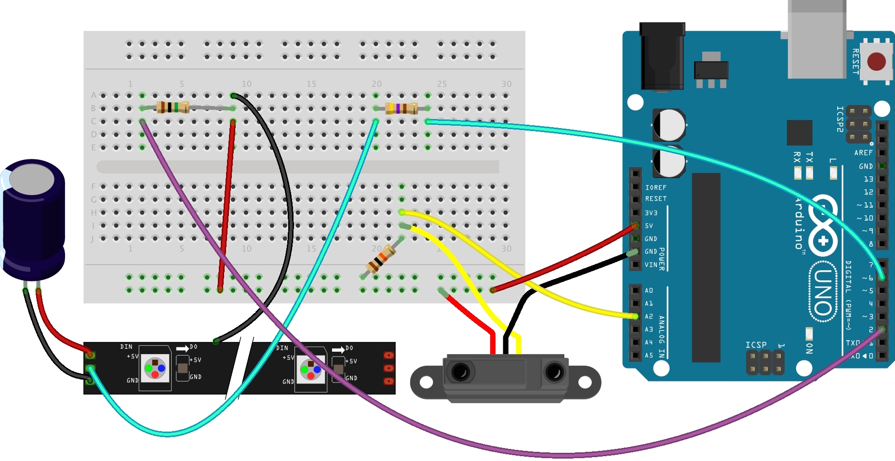
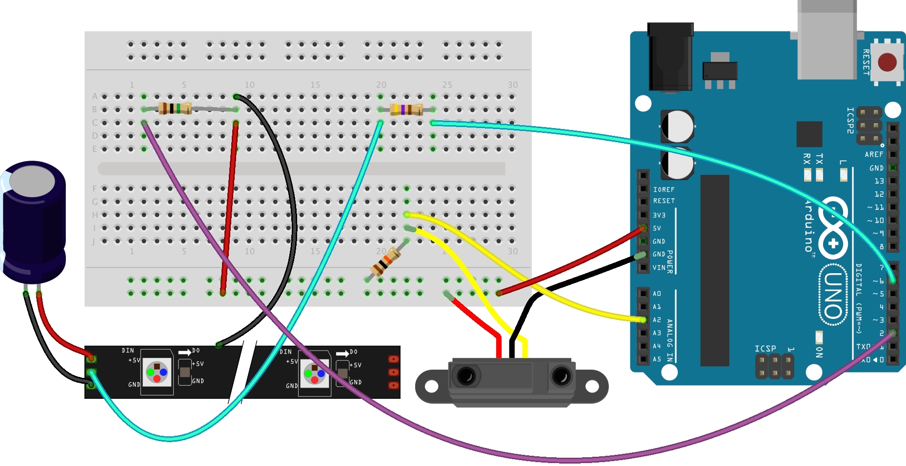

Soft Strobe is an installation prototype developed in April 2017. The core theme that I was interested in with the piece was the interrelation between actors and their actions in an environment. This iteration of the piece consists of three light rods, each made of a LED pixel strip housed inside a light diffusing tube. Attached to each rod, is an infrared proximity sensor, that determines how close a person is to the rod. Each rod has a neutral, or unengaged state, where it flickers with an intensity mirroring the proximity of a person to the tube. When a rod is touched, it switches to an engaged state, where it begins to strobe, gently at first, within a particular RGB range. All the rods are interconnected and aware of how many and which are engaged. The idea is that as more are engaged, the range of RGB values increase, so that they flash with a wider range of color. Although not implemented in this prototype, ultimately, with enough rods engaged, the entire space would be filled with a white light of almost constant intensity.
I hope to develop this project in the future by redesigning more robust and sturdy light rods, as well as rethinking the placement of the rods.

I needed to figure out a way to deal with timings of the LEDs without relying on delay() function. This function was not appropirate becasue it only allowed a global delay in the code, but what I needed was an individual delay for each rod separately. I wrote a sketch using State machines and the millis() function, so that all my timing could be based on the difference between elapsed time and a time interval for each LED strip. This, combined with the capacitive touch circuits for each LED strip, allowed for an effective re-implementation of my original code, which basically allowed me to achieve the parallel timings I needed.
 

///// declaration of NeoPixels
#include
#ifdef __AVR__
#include
#endif
#define PIN 6
#define PIN2 7
#define PIN3 8
#define numberOfPixels 31
Adafruit_NeoPixel strip = Adafruit_NeoPixel(numberOfPixels, PIN, NEO_GRB + NEO_KHZ800);
Adafruit_NeoPixel strip2 = Adafruit_NeoPixel(numberOfPixels, PIN2, NEO_GRB + NEO_KHZ800);
Adafruit_NeoPixel strip3 = Adafruit_NeoPixel(numberOfPixels, PIN3, NEO_GRB + NEO_KHZ800);
//// variables for strip 1
int ledx, ledx2, ledx3, ledx4;
int irSensor = A2; // the analog in pin
int irVal;
int pinkness = 3;
int r, g, b;
int distThresh = 100;
//// variables for strip2
int led2x, led2x2, led2x3, led2x4;
int irSensor2 = A3; // the analog in pin
int irVal2;
int pinkness2 = 3;
int r2, g2, b2;
//int distThresh2 = 220;
//// variables for strip3
int led3x, led3x2, led3x3, led3x4;
int irSensor3 = A4; // the analog in pin
int irVal3;
int pinkness3 = 3;
int r3, g3, b3;
//int distThresh3 = 220;
///////////////////////////
///////////////////////////
unsigned long currentTime;
unsigned long currentTime2;
unsigned long currentTime3;
unsigned long previousTime = 0;
unsigned long previousTime2 = 0;
unsigned long previousTime3 = 0;
int pause = 500;
int pause2 = 500;
int pause3 = 500;
bool flashState = LOW;
bool flashState2 = LOW;
bool flashState3 = LOW;
void timer(int *pause, bool *flashState, unsigned long *pTime) {
if ((millis() - *pTime >= *pause) && (*flashState == LOW)) {
*flashState = !*flashState;
*pTime = millis();
}
else if ((millis() - *pTime >= *pause) && (*flashState == HIGH)) {
*flashState = !*flashState;
*pTime = millis();
}
}
void timer2(int *pause2, bool *flashState2, unsigned long *pTime2) {
if ((millis() - *pTime2 >= *pause2) && (*flashState2 == LOW)) {
*flashState2 = !*flashState2;
*pTime2 = millis();
}
else if ((millis() - *pTime2 >= *pause2) && (*flashState2 == HIGH)) {
*flashState2 = !*flashState2;
*pTime2 = millis();
}
}
void timer3(int *pause3, bool *flashState3, unsigned long *pTime3) {
if ((millis() - *pTime3 >= *pause3) && (*flashState3 == LOW)) {
*flashState3 = !*flashState3;
*pTime3 = millis();
}
else if ((millis() - *pTime3 >= *pause3) && (*flashState3 == HIGH)) {
*flashState3 = !*flashState3;
*pTime3 = millis();
}
}
//float counter = .1;
///////////////////////////
// readCapacitivePin
// Input: Arduino pin number
// Output: A number, from 0 to 17 expressing
// how much capacitance is on the pin
// When you touch the pin, or whatever you have
// attached to it, the number will get higher
#include "pins_arduino.h" // Arduino pre-1.0 needs this
uint8_t readCapacitivePin(int pinToMeasure) {
// Variables used to translate from Arduino to AVR pin naming
volatile uint8_t* port;
volatile uint8_t* ddr;
volatile uint8_t* pin;
// Here we translate the input pin number from
// Arduino pin number to the AVR PORT, PIN, DDR,
// and which bit of those registers we care about.
byte bitmask;
port = portOutputRegister(digitalPinToPort(pinToMeasure));
ddr = portModeRegister(digitalPinToPort(pinToMeasure));
bitmask = digitalPinToBitMask(pinToMeasure);
pin = portInputRegister(digitalPinToPort(pinToMeasure));
// Discharge the pin first by setting it low and output
*port &= ~(bitmask);
*ddr |= bitmask;
delay(1);
uint8_t SREG_old = SREG; //back up the AVR Status Register
// Prevent the timer IRQ from disturbing our measurement
noInterrupts();
// Make the pin an input with the internal pull-up on
*ddr &= ~(bitmask);
*port |= bitmask;
// Now see how long the pin to get pulled up. This manual unrolling of the loop
// decreases the number of hardware cycles between each read of the pin,
// thus increasing sensitivity.
uint8_t cycles = 17;
if (*pin & bitmask) {
cycles = 0;
}
else if (*pin & bitmask) {
cycles = 1;
}
else if (*pin & bitmask) {
cycles = 2;
}
else if (*pin & bitmask) {
cycles = 3;
}
else if (*pin & bitmask) {
cycles = 4;
}
else if (*pin & bitmask) {
cycles = 5;
}
else if (*pin & bitmask) {
cycles = 6;
}
else if (*pin & bitmask) {
cycles = 7;
}
else if (*pin & bitmask) {
cycles = 8;
}
else if (*pin & bitmask) {
cycles = 9;
}
else if (*pin & bitmask) {
cycles = 10;
}
else if (*pin & bitmask) {
cycles = 11;
}
else if (*pin & bitmask) {
cycles = 12;
}
else if (*pin & bitmask) {
cycles = 13;
}
else if (*pin & bitmask) {
cycles = 14;
}
else if (*pin & bitmask) {
cycles = 15;
}
else if (*pin & bitmask) {
cycles = 16;
}
// End of timing-critical section; turn interrupts back on if they were on before, or leave them off if they were off before
SREG = SREG_old;
// Discharge the pin again by setting it low and output
// It's important to leave the pins low if you want to
// be able to touch more than 1 sensor at a time - if
// the sensor is left pulled high, when you touch
// two sensors, your body will transfer the charge between
// sensors.
*port &= ~(bitmask);
*ddr |= bitmask;
return cycles;
}
const int touchPin = 4;
const int touchPin2 = 3;
const int touchPin3 = 2;
int thresh = 10;
int thresh2 = 10;
int thresh3 = 10; // check after attaching to strip whether this value is different
int capacitance;
int capacitance2;
int capacitance3;
///////////////////////////
//////////////////////////
//light functions
void strobe (int red, int green, int blue) {
for (int ledx = 0; ledx < numberOfPixels; ledx++) {
strip.setPixelColor(ledx, red, green, blue);
}
strip.show();
}
void strobe2 (int red, int green, int blue) {
for (int led2x = 0; led2x < numberOfPixels; led2x++) {
strip2.setPixelColor(led2x, red, green, blue);
}
strip2.show();
}
void strobe3 (int red, int green, int blue) {
for (int led3x = 0; led3x < numberOfPixels; led3x++) {
strip3.setPixelColor(led3x, red, green, blue);
}
strip3.show();
}
// function to turn off entire strip
void stripOff() {
for (int ledx = 0; ledx < numberOfPixels; ledx++) {
strip.setPixelColor(ledx, 0, 0, 0);
}
strip.show();
}
void strip2Off() {
for (int led2x = 0; led2x < numberOfPixels; led2x++) {
strip2.setPixelColor(led2x, 0, 0, 0);
}
strip2.show();
}
void strip3Off() {
for (int led3x = 0; led3x < numberOfPixels; led3x++) {
strip3.setPixelColor(led3x, 0, 0, 0);
}
strip3.show();
}
bool triggered;
bool done;
bool triggered2;
bool done2;
bool triggered3;
bool done3;
int engaged = 0;
int engaged2 = 0;
int engaged3 = 0;
// int coin1, coin2, coin3;
void setup() {
Serial.begin(9600);
strip.begin(); // start strip
strip.show(); // Initialize all pixels to 'off'
strip2.begin();
strip2.show();
strip3.begin();
strip3.show();
}
///////////////////////////
void loop() {
//check capacitance
capacitance = readCapacitivePin(touchPin);
capacitance2 = readCapacitivePin(touchPin2);
capacitance3 = readCapacitivePin(touchPin3);
// Serial.print(capacitance);
// Serial.print("|||");
// Serial.print(capacitance2);
// Serial.print("|||");
// Serial.println(capacitance3);
if (capacitance < thresh) {
triggered = false;
engaged = 0;
}
else if (capacitance >= thresh) {
triggered = true;
done = false;
engaged = 1;
}
if (capacitance2 < thresh2) {
triggered2 = false;
engaged2 = 0;
}
else if (capacitance2 >= thresh2) {
triggered2 = true;
done2 = false;
engaged2 = 1;
}
if (capacitance3 < thresh3) {
triggered3 = false;
engaged3 = 0;
}
else if (capacitance3 >= thresh3) {
triggered3 = true;
done3 = false;
engaged3 = 1;
}
int numEngaged = engaged + engaged2 + engaged3;
///////////////////// STRIP 1 ////////////////////
//////////////////////////////////////////////////
if ((triggered == false) && (done == true)) { /// 1.
//read IR val from irSensor Pin
irVal = analogRead(irSensor);
Serial.print("|||");
Serial.print(irVal);
//constrain value to stable range
irVal = constrain(irVal, 80, 400); //originally 220, 660
// Serial.print(irVal);
int b = map(irVal, 80, 400, 100, 255);
if (irVal < distThresh) {
pause = random(150, 320);
}
else if (irVal > distThresh) {
pause = map(irVal, 80, 400, 120, 50);
}
currentTime = millis();
bool pFlashState = flashState;
timer(&pause, &flashState, &previousTime);
if (flashState != pFlashState) {
if (flashState == 1) {
//Serial.println("Doton"); //dotFlash on
ledx = ledx = random(0, numberOfPixels);
r = g = b - 8;
strip.setPixelColor(ledx, r, g, b);
//subflashes
// 1.
if (irVal < distThresh) {
int dice1 = random(100); //generates random number between 0-100
if (dice1 < 20) { //checks it against 50, 50% of being larger
ledx2 = ledx + random(1, 3); // 50 % chance to generate second lit led, ledx2 (1-5) larger than ledx1
strip.setPixelColor(ledx2, r / 4, g / 4, b / 4);
}
}
//2.
if (irVal > 300 && irVal <= 400) {
int dice1 = random(100);
if (dice1 < 40) {
ledx2 = ledx + random(1, 3);
strip.setPixelColor(ledx2, (r / 8) * 5, (g / 8) * 5, (b / 8) * 5);
}
int dice2 = random(100);
if (dice2 < 20) {
ledx3 = ledx - random(1, 4);
strip.setPixelColor(ledx3, (r / 8) * 5, (g / 8) * 5, (b / 8) * 5);
}
}
//3.
if (irVal < 300) {
int dice1 = random(100);
if (dice1 < 70) {
ledx2 = ledx + random(1, 3);
strip.setPixelColor(ledx2, r * 0.75, g * 0.75, b * 0.75);
}
int dice2 = random(100);
if (dice2 < 50) {
ledx3 = ledx - random(1, 4);
strip.setPixelColor(ledx3, r * 0.75, g * 0.75, b * 0.75);
}
int dice3 = random(100);
if (dice3 < 20) {
ledx4 = ledx + random(1, 5);
strip.setPixelColor(ledx4, r * 0.75, g * 0.75, b * 0.75);
}
}
strip.show();
}
else if (flashState == 0) {
//Serial.println("Dotoff"); //dotFlash off
// strip.setPixelColor(ledx, 0, 0, 0);
// strip.setPixelColor(ledx2, 0, 0, 0);
// strip.setPixelColor(ledx3, 0, 0, 0);
// strip.setPixelColor(ledx4, 0, 0, 0);
// strip.show();
stripOff();
}
}
}
else if (done == false) { /// 2.
if (pause > 50) {
pause = pause - 5;
}
else if (pause == 50) {
pause = pause + 5;
}
int coin = random(100);
int low;
int lowSpeq;
if (numEngaged == 3) {
low = 50;
lowSpeq = 45;
}
else if (numEngaged == 2) {
low = 20;
lowSpeq = 10;
}
else {
low = 10;
lowSpeq = 3;
}
if (coin < low) {
if (coin < lowSpeq) {
r = 10;
g = 250;
b = 0;
} else {
r = 5;
b = 230;
g = random(20);
}
}
else {
r = 255;
b = 5;
g = 0;
}
currentTime = millis();
bool pFlashState = flashState;
timer(&pause, &flashState, &previousTime);
if (flashState != pFlashState) {
if (flashState == 1) {
//Serial.println("Strobeon"); //strobe on
strobe(r, 2, b);
capacitance = readCapacitivePin(touchPin);
if (capacitance < thresh) { // bail out on sensor detect
pinkness = 0;
stripOff();
}
}
else if (flashState == 0) {
//Serial.println("Strobeoff"); //strobe off
stripOff();
capacitance = readCapacitivePin(touchPin);
if (capacitance < thresh) { // bail out on sensor detect
pinkness = 0;
stripOff();
}
done = true;
}
}
}
///////////////////// STRIP 2 ////////////////////
//////////////////////////////////////////////////
if ((triggered2 == false) && (done2 == true)) { //2.1
//read IR val from irSensor Pin
irVal2 = analogRead(irSensor2);
Serial.print("|||");
Serial.print(irVal2);
//constrain value to stable range
irVal2 = constrain(irVal2, 80, 400);
// Serial.print(irVal2);
int b2 = map(irVal2, 80, 400, 100, 255);
if (irVal2 < distThresh) {
pause2 = random(200, 310);
} else if (irVal2 > distThresh) {
pause2 = map(irVal2, 80, 400, 120, 50);
}
currentTime2 = millis();
bool pFlashState2 = flashState2;
timer2(&pause2, &flashState2, &previousTime2);
if (flashState2 != pFlashState2) {
if (flashState2 == 1) {
//Serial.println("Doton"); //dotFlash on
led2x = led2x = random(0, numberOfPixels);
r2 = g2 = b2 - 8;
strip2.setPixelColor(led2x, r2, g2, b2);
//subflashes
// 1.
if (irVal2 < distThresh) {
int dice1 = random(100); //generates random number between 0-100
if (dice1 < 20) { //checks it against 50, 50% of being larger
led2x2 = led2x + random(1, 3); // 50 % chance to generate second lit led, ledx2 (1-5) larger than ledx1
strip2.setPixelColor(led2x2, r2 / 4, g2 / 4, b2 / 4);
}
}
//2.
if (irVal2 > 300 && irVal2 <= 400) {
int dice1 = random(100);
if (dice1 < 40) {
led2x2 = led2x + random(1, 3);
strip2.setPixelColor(led2x2, (r2 / 8) * 5, (g2 / 8) * 5, (b2 / 8) * 5);
}
int dice2 = random(100);
if (dice2 < 20) {
led2x3 = led2x - random(1, 4);
strip2.setPixelColor(led2x3, (r2 / 8) * 5, (g2 / 8) * 5, (b2 / 8) * 5);
}
}
//3.
if (irVal2 < 300) {
int dice1 = random(100);
if (dice1 < 70) {
led2x2 = led2x + random(1, 3);
strip2.setPixelColor(led2x2, r2 * 0.75, g2 * 0.75, b2 * 0.75);
}
int dice2 = random(100);
if (dice2 < 50) {
led2x3 = led2x - random(1, 4);
strip2.setPixelColor(led2x3, r2 * 0.75, g2 * 0.75, b2 * 0.75);
}
int dice3 = random(100);
if (dice3 < 20) {
led2x4 = led2x + random(1, 5);
strip2.setPixelColor(led2x4, r2 * 0.75, g2 * 0.75, b2 * 0.75);
}
}
strip2.show();
}
else if (flashState2 == 0) {
// Serial.println("Dotoff"); //dotFlash off
// strip2.setPixelColor(led2x, 0, 0, 0);
// strip2.setPixelColor(led2x2, 0, 0, 0);
// strip2.setPixelColor(led2x3, 0, 0, 0);
// strip2.setPixelColor(led2x4, 0, 0, 0);
// strip2.show();
strip2Off();
}
}
} //close if2
else if (done2 == false) { //2.2
if (pause2 > 50) {
pause2 = pause2 - 5;
}
else if (pause == 50) {
pause2 = pause2 + 5;
}
int coin2 = random(100);
int low2;
int lowSpeq2;
if (numEngaged == 3) {
low2 = 55;
lowSpeq2 = 40;
}
else if (numEngaged == 2) {
low2 = 26;
lowSpeq2 = 12;
}
else {
low2 = 9;
lowSpeq2 = 4;
}
if (coin2 < low2) {
if (coin2 < lowSpeq2) {
r2 = 10;
g2 = 250;
b2 = 0;
} else {
r2 = 250;
b2 = 5;
g2 = random(20);
}
}
else {
r2 = 13;
b2 = 255;
g2 = 0;
}
currentTime2 = millis();
bool pFlashState2 = flashState2;
timer2(&pause2, &flashState2, &previousTime2);
if (flashState2 != pFlashState2) {
if (flashState2 == 1) {
//Serial.println("Strobeon"); //strobe on
strobe2(r2, g, b2);
capacitance2 = readCapacitivePin(touchPin2);
if (capacitance2 < thresh2) { // bail out on sensor detect
pinkness = 0;
strip2Off();
}
}
else if (flashState2 == 0) {
//Serial.println("Strobeoff"); //strobe off
strip2Off();
capacitance2 = readCapacitivePin(touchPin2);
if (capacitance2 < thresh2) { // bail out on sensor detect
pinkness = 0;
strip2Off();
}
done2 = true;
}
}
} //close elseif2
///////////////////// STRIP 3 ////////////////////
//////////////////////////////////////////////////
if ((triggered3 == false) && (done3 == true)) { //3.1
//read IR val from irSensor Pin
irVal3 = analogRead(irSensor3);
Serial.print("|||");
Serial.println(irVal3);
//constrain value to stable range
irVal3 = constrain(irVal3, 80, 400);
// Serial.println(irVal3);
int b3 = map(irVal3, 80, 400, 100, 255);
if (irVal3 < distThresh) {
pause3 = random(160, 350);
}
else if (irVal3 > distThresh) {
pause3 = map(irVal3, 80, 400, 120, 50);
}
currentTime3 = millis();
bool pFlashState3 = flashState3;
timer3(&pause3, &flashState3, &previousTime3);
if (flashState3 != pFlashState3) {
if (flashState3 == 1) {
//Serial.println("Doton"); //dotFlash on
led3x = led3x = random(0, numberOfPixels);
r3 = g3 = b3 - 8;
strip3.setPixelColor(led3x, r3, g3, b3);
//subflashes
// 1.
if (irVal3 < distThresh) {
int dice1 = random(100); //generates random number between 0-100
if (dice1 < 20) { //checks it against 50, 50% of being larger
led3x2 = led3x + random(1, 3); // 50 % chance to generate second lit led, ledx2 (1-5) larger than ledx1
strip3.setPixelColor(led3x2, r3 / 4, g3 / 4, b3 / 4);
}
}
//2.
if (irVal3 > 300 && irVal3 <= 400) {
int dice1 = random(100);
if (dice1 < 40) {
led3x2 = led3x + random(1, 3);
strip3.setPixelColor(led3x2, (r3 / 8) * 5, (g3 / 8) * 5, (b3 / 8) * 5);
}
int dice2 = random(100);
if (dice2 < 20) {
led3x3 = led3x - random(1, 4);
strip3.setPixelColor(led3x3, (r3 / 8) * 5, (g3 / 8) * 5, (b3 / 8) * 5);
}
}
//3.
if (irVal3 < 300) {
int dice1 = random(100);
if (dice1 < 70) {
led3x2 = led3x + random(1, 3);
strip3.setPixelColor(led3x2, r3 * 0.75, g3 * 0.75, b3 * 0.75);
}
int dice2 = random(100);
if (dice2 < 50) {
led3x3 = led3x - random(1, 4);
strip3.setPixelColor(led3x3, r3 * 0.75, g3 * 0.75, b3 * 0.75);
}
int dice3 = random(100);
if (dice3 < 20) {
led3x4 = led3x + random(1, 5);
strip3.setPixelColor(led3x4, r3 * 0.75, g3 * 0.75, b3 * 0.75);
}
}
strip3.show();
}
else if (flashState3 == 0) {
//Serial.println("Dotoff"); //dotFlash off
// strip3.setPixelColor(led3x, 0, 0, 0);
// strip3.setPixelColor(led3x2, 0, 0, 0);
// strip3.setPixelColor(led3x3, 0, 0, 0);
// strip3.setPixelColor(led3x4, 0, 0, 0);
// strip3.show();
strip3Off();
}
}
} //close if3
else if (done3 == false) { //3.2
if (pause3 > 50) {
pause3 = pause3 - 5;
}
else if (pause3 == 50) {
pause3 = pause3 + 5;
}
int coin3 = random(100);
int low3;
int lowSpeq3;
if (numEngaged == 3) {
low3 = 55;
lowSpeq3 = 40;
}
else if (numEngaged == 2) {
low3 = 26;
lowSpeq3 = 12;
}
else {
low3 = 9;
lowSpeq3 = 4;
}
if (coin3 < low3) {
if (coin3 < lowSpeq3) {
r3 = 11;
g3 = 250;
b3 = 0;
} else {
r3 = 5;
b3 = 250;
g3 = random(20);
}
}
else {
r3 = 255;
b3 = 0;
g3 = 140;
}
currentTime3 = millis();
bool pFlashState3 = flashState3;
timer3(&pause3, &flashState3, &previousTime3);
if (flashState3 != pFlashState3) {
if (flashState3 == 1) {
//Serial.println("Strobeon"); //strobe on
strobe3(r3, g, b3);
capacitance3 = readCapacitivePin(touchPin3);
if (capacitance3 < thresh3) { // bail out on sensor detect
pinkness = 0;
strip3Off();
}
}
else if (flashState3 == 0) {
//Serial.println("Strobeoff"); //strobe off
strip3Off();
capacitance3 = readCapacitivePin(touchPin3);
if (capacitance3 < thresh3) { // bail out on sensor detect
pinkness = 0;
strip3Off();
}
done3 = true;
}
}
} //close elsif3
}//close void